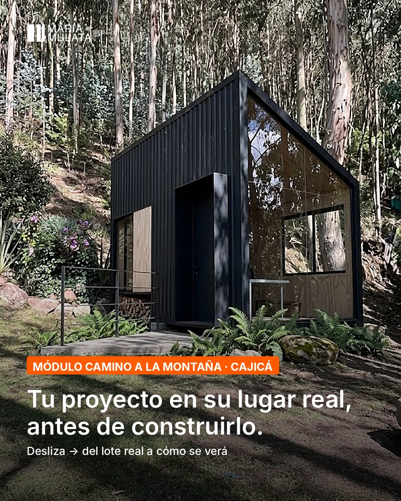
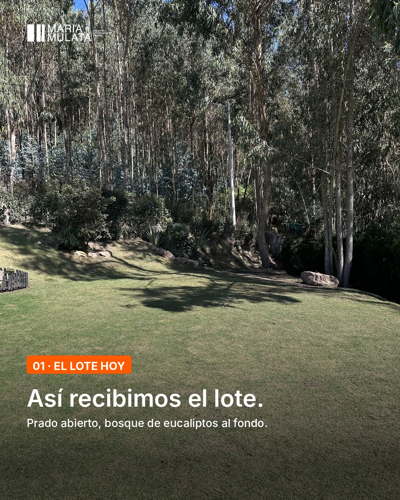
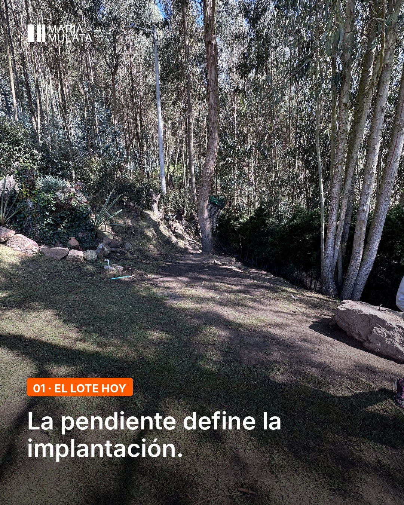
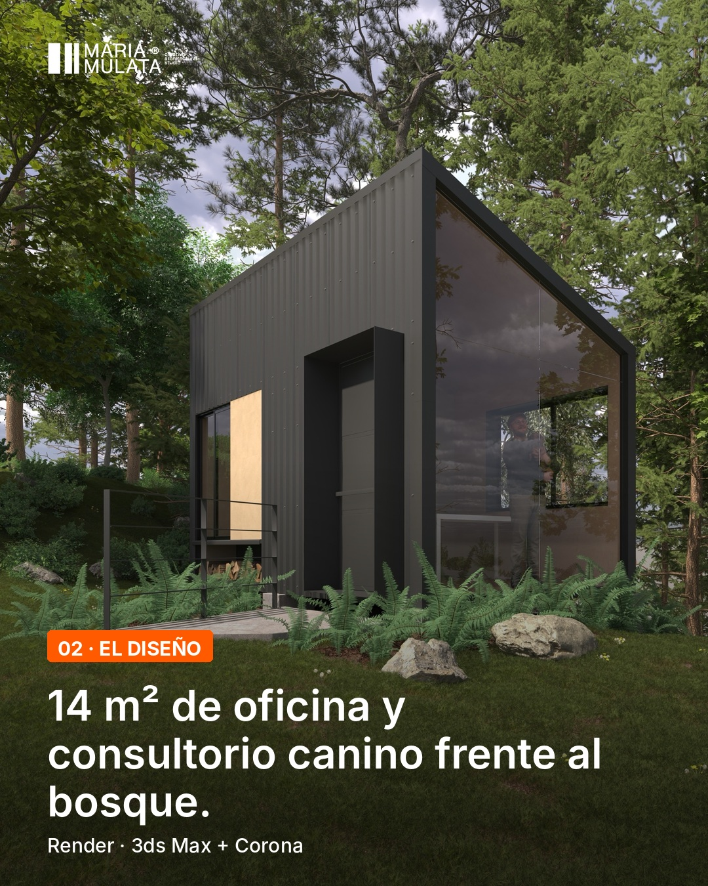
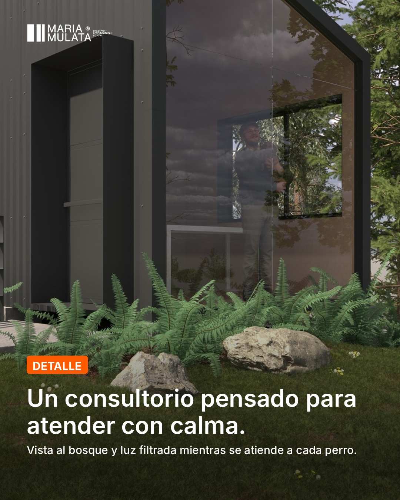
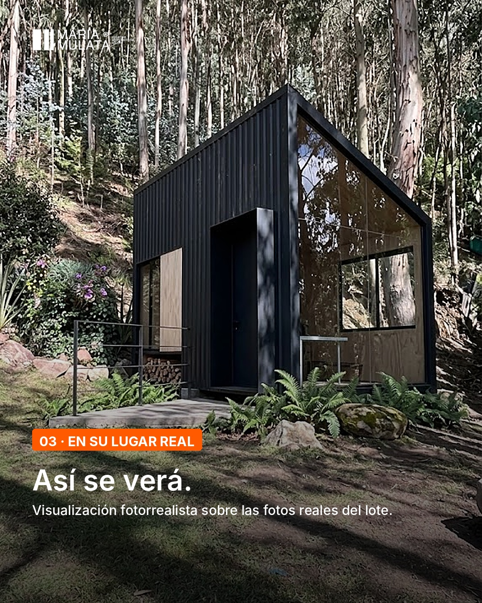
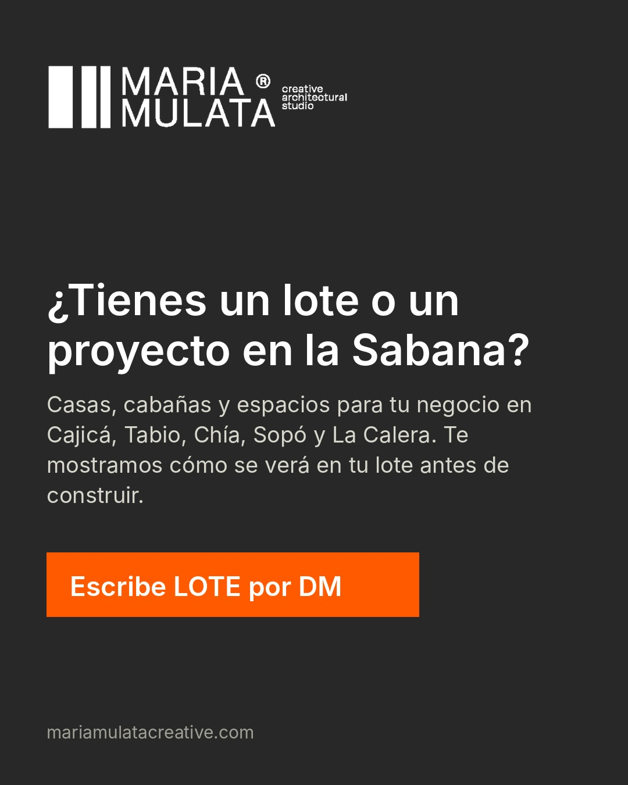
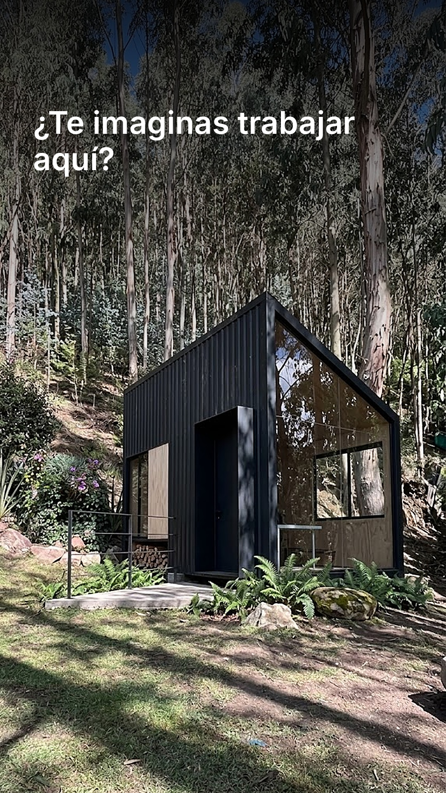
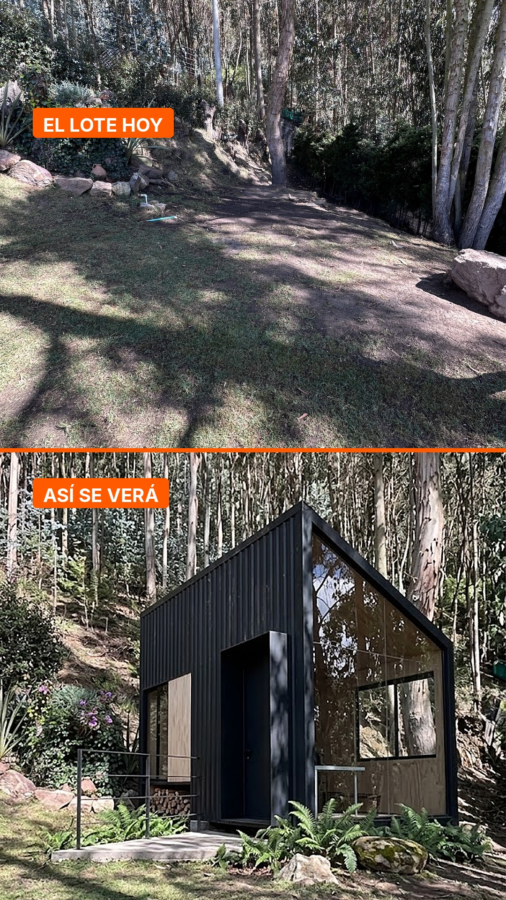
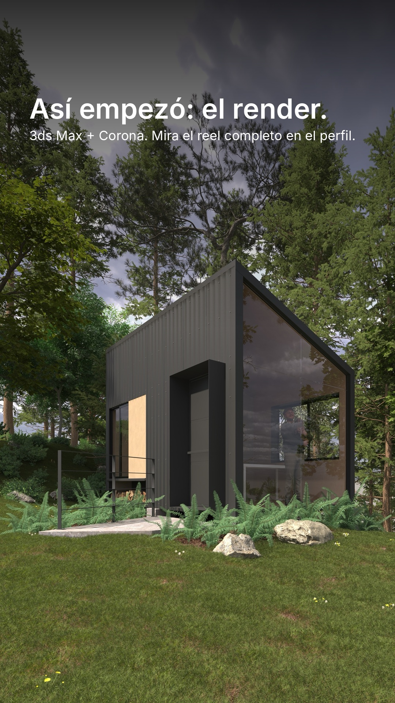

Revisa y responde en el chat: "Apruebo…" o los cambios que quieras.
Mié 18 nov · 7:00 p. m.
1. Reel de transición
Sin música: se añade audio en tendencia desde Instagram.
Así está el lote hoy → así se verá. 🌲
Módulo Camino a la Montaña: 14 m² de oficina y consultorio canino para un colegio canino en Cajicá. Lámina negra, vidrio de piso a techo y un bosque de eucaliptos como vecino.
En 2023 les mostramos el render. Hoy lo ponemos en su lugar real.
Primero leemos el terreno, luego lo diseñamos en 3D y al final lo ponemos sobre las fotos reales del lote. Así el cliente decide con certeza antes de poner el primer bloque, sea una casa, una cabaña o un espacio para su negocio.
¿Tienes un lote o un proyecto en la Sabana? Escribe LOTE por mensaje directo y te contamos cómo empezar.
#arquitecturacolombia #arquitecturacomercial #colegiocanino #veterinaria #cajica #sabanadebogota #diseñoarquitectonico #visualizacionarquitectonica #render3d
Sáb 21 nov · 10:00 a. m.
2. Carrusel (7 imágenes)
Desliza →







Antes de dibujar una línea, el lote ya nos dijo casi todo. 3 cosas que leímos para diseñar el Módulo Camino a la Montaña, oficina y consultorio de un colegio canino en Cajicá:
1️⃣ La pendiente. Decide dónde se apoya el módulo, cuánto se excava y por dónde llegan los perros y sus dueños.
2️⃣ Los árboles existentes. El bosque de eucaliptos no se tumba: se vuelve la vista principal. Por eso la fachada de vidrio mira hacia él.
3️⃣ La luz. Entre troncos altos la luz llega filtrada; el volumen oscuro se funde con la sombra y la madera da calidez a un espacio de atención que debe sentirse tranquilo.
Desliza para ver el recorrido completo: lote real → render → visualización sobre la foto real.
📌 Guárdalo si vas a construir en un lote campestre: casa, cabaña o negocio.
¿Ya tienes el tuyo? Escribe LOTE por DM.
#arquitecturacolombia #arquitecturacomercial #lotecampestre #colegiocanino #cajica #sabanadebogota #diseñoarquitectonico #arquitecturaenmadera
Jue 19 y vie 20 · las subes tú
3. Historias

Jue 19 · 12:30 p. m. — Pon el sticker de encuesta: Render / Foto real

Vie 20 · 12:30 p. m. — Sticker de enlace al reel + resultado de la encuesta

Vie 20 · 12:30 p. m. — Sticker de pregunta: ¿Qué te gustaría construir en tu lote?